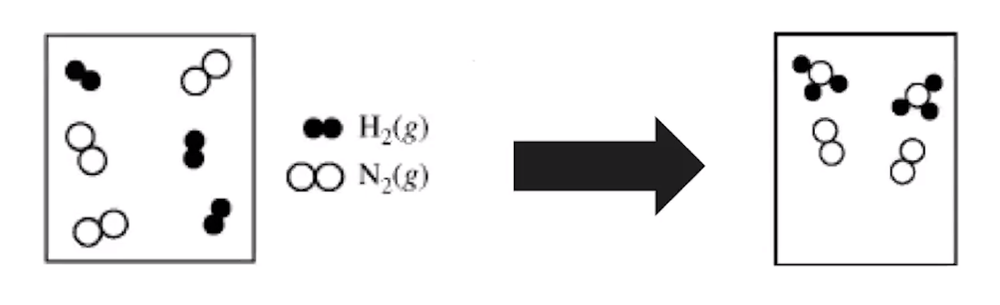

Chemical reactions can be represented in 2 different ways
Chemical symbols for:
Reactants, products, states of matter
N2(g)+3H2(g) => 2NH3(g)
Particulate models
{width="4.5625in" height="1.3958333333333333in"}
Subscripts are unchangeable and represent compounds - O~2~, etc
Coefficients are changeable and are used to balance mass of equations
Particle representations can effectively show atom sizes and molecular sizes
Particulate representations STILL need to be balanced
Compounds STILL need to be accurate (O~2~, etc must be pairs)